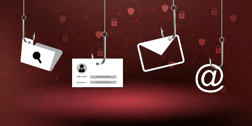

How To Stop Phishing Attacks With These Simple Tips
It’s more important than ever to protect your users from phishing and other cybersecurity threats. Security awareness training is the best way to prevent these attacks from hurting your company, and this training can make or break your company’s security culture. If you want your users to be security aware, then the most effective responses to phishing and other threats are “Stop. Think. Connect.”
What Is Phishing and How Can It Be Solved with Security Awareness Training?
A phishing assault attempts to coax the target to click on a link, open an attachment, provide their email address, or other sensitive information. Since 2019, there have been 71% cyber crimes involving phishing, although more were motivated by financial gains. A study of cybersecurity experts found that the largest portion of the incidents originated from phishing with stolen credentials. Research also suggests that 33 percent of all cyberattacks this year involved some sort of social engineering. It's assumed that the money gained from Internet identity theft attacks is not worth it. It is unclear whether this is a popular conviction, however the FBI's Internet Crime Complaint Center has been estimating a theft of almost $57 million due to phishing attacks.
Employee awareness training helps employees to identify cyberattacks and prevent them from making the usual yet unintentional mistake.
How to Avoid Phishing Scams?
Individuals may safeguard themselves from certain kinds of phishing attacks by consciously using some degree of caution when performing online activities (such as providing personal information or financial data), and using cybersecurity tools. The most common methods people can use to stay away from suspicious activities may be listed as follows.
1. Anti-Phishing Tools
Anti-phishing tools and software provide many advantages and unique features, including spam filtering, scanning attachments, detecting suspicious emails, blocking phishing users, etc., which allow you to quickly and easily recognize and prevent phishing emails sent to you by cybercriminals.
2. Email Handling
Irrespective of whether your anti-phishing solution is set up by you or not, every user should study and confirm that an email is authentic. This is often achieved using the following points.
- Is the sender a known person or is the message unsolicited?
- Does the domain(@abc.com) belong to the organization it represents?
- If it looks to be too good to be true, then it's probably spam.
- Don't click links, text, or buttons that begin with https and enter; when the cursor moves over the link, it shows the URL in full; likewise, be sure the domain name is accurate and that the correct spelling is used as in the link.
- Do not open any attachments without prior scanning. When an attachment is opened despite having unknown extension or .exe extension, any unauthorized action taken by the sender of the attachment is considered malicious. No person or organization sends exe files via email.
3. Vishing and SMiShing Safety Precautions

There is a range of indicators you may examine when choosing suspicious messages or phone calls.
- Consider using apps to contact trusted phone numbers and certify telephone number security for telecommunications.
- Don't give away information through messages or phone calls--instead, submit that information through authorized channels.
- Do not share your username, passwords, or authentication pins with either an individual on call or a message, even if the sender claims to be from your bank. Receipts for online financial transactions always require authentication passwords; therefore, only you should be using them and no one else.
- Telephone calls that seem like they will be robocalls should be challenged with random and obscure questions.
4. Online Phishing
While some social media platforms are harmless, there are also a few malicious sites. An article on these websites typically includes a warning that states it's not credible.
- Keep your personal information off social media profiles if you do not know the other party personally. Do not assume any non-encrypted connection is safe.
- Aim to operate on secure sites. You can identify whether a website is secure by looking at the URL following the https:// protocol, which indicates a secure and encrypted data transfer between your device and the hosting server.
- Similarly, check out whether the links have HTTP or https, as https (Hypertext Transfer Protocol Secure) links are more secure than HTTP links.
In summary, these tips will help you, your employees and your end users be more aware of phishing and how you can prevent attacks.